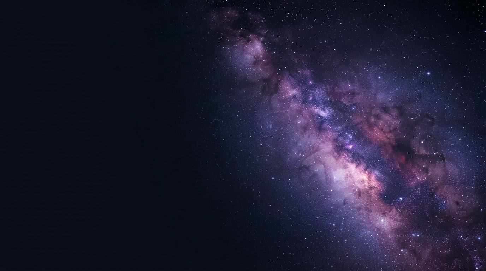
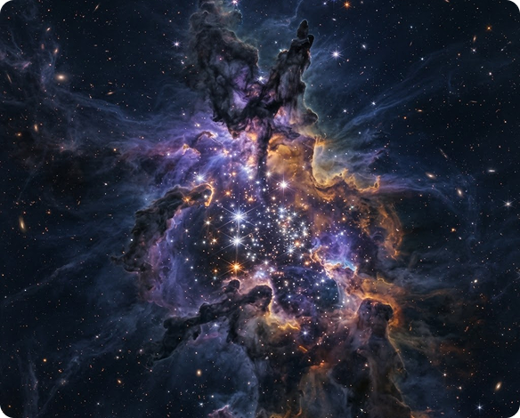

El cazador
Orión ↗
Busca las tres estrellas de su cinturón. Betelgeuse y Rigel marcan sus extremos.

Un universo por descubrir
Cada estrella tiene una historia. Explora las constelaciones, conoce nuestro universo y empieza tu propio viaje cósmico.
El cosmos, más cerca
Las constelaciones son regiones del cielo. Sus figuras nos ayudan a orientarnos, aunque las estrellas que vemos juntas pueden estar muy lejos entre sí.
El cazador
Busca las tres estrellas de su cinturón. Betelgeuse y Rigel marcan sus extremos.

Una brújula natural
El Gran Carro es parte de esta constelación. Sus estrellas ayudan a localizar la Polar.

La reina del cielo
Cinco estrellas brillantes forman su famosa W. Una figura ideal para empezar a reconocer el cielo.

Son enormes esferas de plasma que producen energía por fusión nuclear. Su masa marca el ritmo de su vida.
Nacen en nebulosas
La gravedad reúne gas y polvo hasta encender una estrella.
Brillan durante millones de años
En su núcleo, el hidrógeno se transforma en helio.
Transforman el universo
Según su masa, dejan enanas blancas, estrellas de neutrones o agujeros negros. Parte de su materia forma nuevas estrellas.
Desde los mundos rocosos hasta los gigantes gaseosos, la gravedad del Sol mantiene unido nuestro sistema.
Rocosos
Mercurio · Venus · Tierra · Marte
Gigantes gaseosos y helados
Júpiter · Saturno · Urano · Neptuno

SATURNO — Sus anillos están formados, sobre todo, por hielo.
01
Islas de miles de millones de estrellas, gas y polvo. Nuestro hogar es una de ellas: la Vía Láctea.
02
Regiones donde la gravedad es tan intensa que ni siquiera la luz puede escapar de su horizonte.
03
No miden tiempo, sino distancia: lo que recorre la luz en un año, unos 9,46 billones de kilómetros.
De la pantalla al cielo
No necesitas un telescopio para empezar. Solo curiosidad, un lugar oscuro y un poco de tiempo.
Recuerda: nunca mires al Sol sin protección solar certificada.
Aléjate de las luces
Busca un lugar seguro con el horizonte despejado.
Dale tiempo a tus ojos
Espera unos 20–30 minutos y evita las pantallas brillantes.
Empieza por lo reconocible
La Luna, un planeta brillante o una constelación sencilla.
Consulta un mapa del cielo
Lo que ves cambia según tu ubicación, la fecha y la hora.